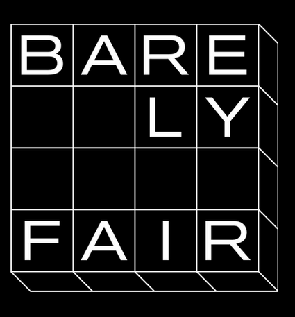

BARELY FAIR 2026
3 APR through 19 APR, 2026
General Admission: APR 4-12, 11-5 PM
Extended Exhibition: APR 14-19, 12-5 PM
Evening events: APR 3, 4, 7, 10 & 11
CLOSED MONDAYS
TICKETS AVAILABLE HERE!
The BARELY FAIR Ticketing Portal is live! Tickets are limited, but we will be adding more inventory closer to the events. If you find a day or event sold out, please make use wait lists if you cannot attend another day. We can’t wait to see you!
2026 EXHIBITORS: